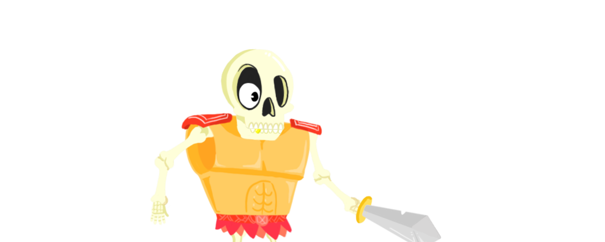

<div class="page-profile"> 
  <section>
    <div class="header-background">
        <div class="personagem">
            <div class="personagem-container">
            
            <h1>ZONZO</h1>
            <div class="gradient"></div>
            </div>
        </div>
    </div>
      
    <div class="content">
      <div class="categoria">
        <i>  </i>
        <br>
        <span>Ataque</span>
      </div>
        <div class="perfil">
          <div class="nav">
              <span>Características</span>
          </div>
          <div class="nucleo">
            <div class="caracteristicas">
              <p> <b>Aspectos físicos:</b> O personagem é um esqueleto de estatura baixa. </p>
              <p> <b>Vestimentas:</b> O personagem veste uma grande e pesada armadura de metal. Por conta 
              do peso da armadura, o esqueleto possui movimentos desajeitados e anda mancando. A dificuldade 
              de locomoção resulta em uma velocidade menor que outros personagens.</p>
              <p> <b>Equipamentos:</b> Como equipamento padrão, o personagem empunha uma espada gasta de metal.</p>
              <p> <b>Personalidade: </b> Zonzo é piadista e agitado, orgulhoso. Ele se empolga
              muito fácil e acha que ninguém é capaz de derrotá-lo.</p>
            </div>
          </div>
        </div>
      </div>
    </section>    
</div>